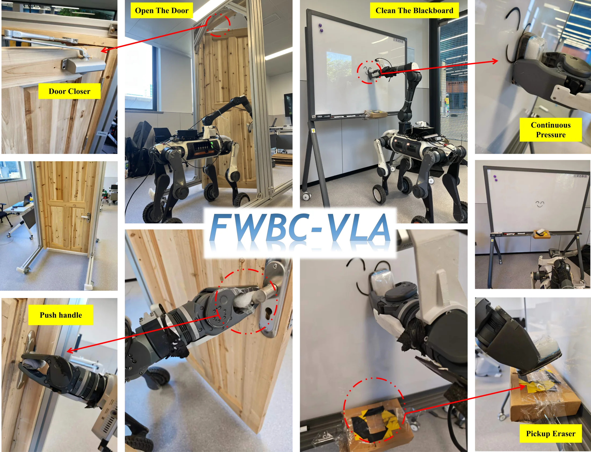
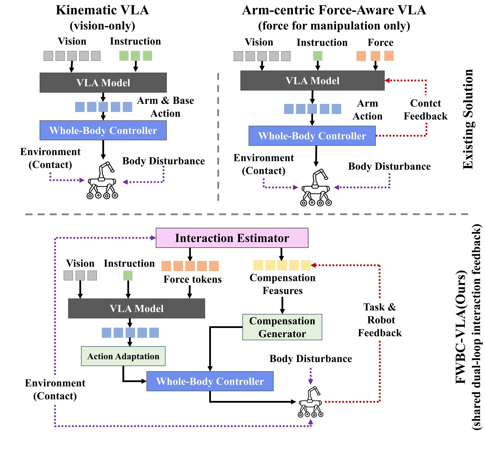
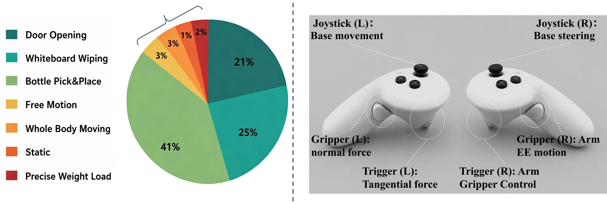
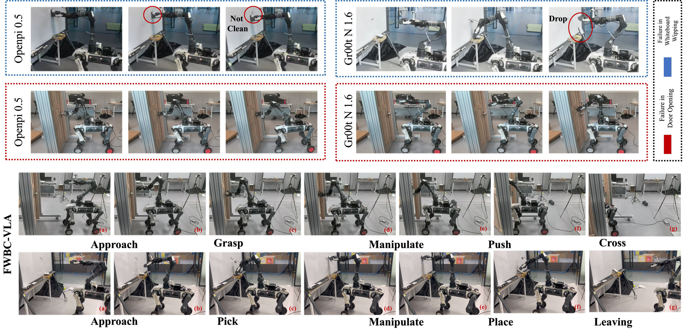
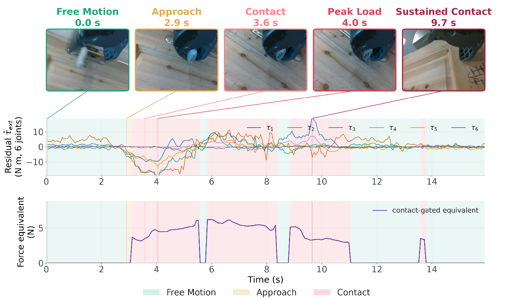
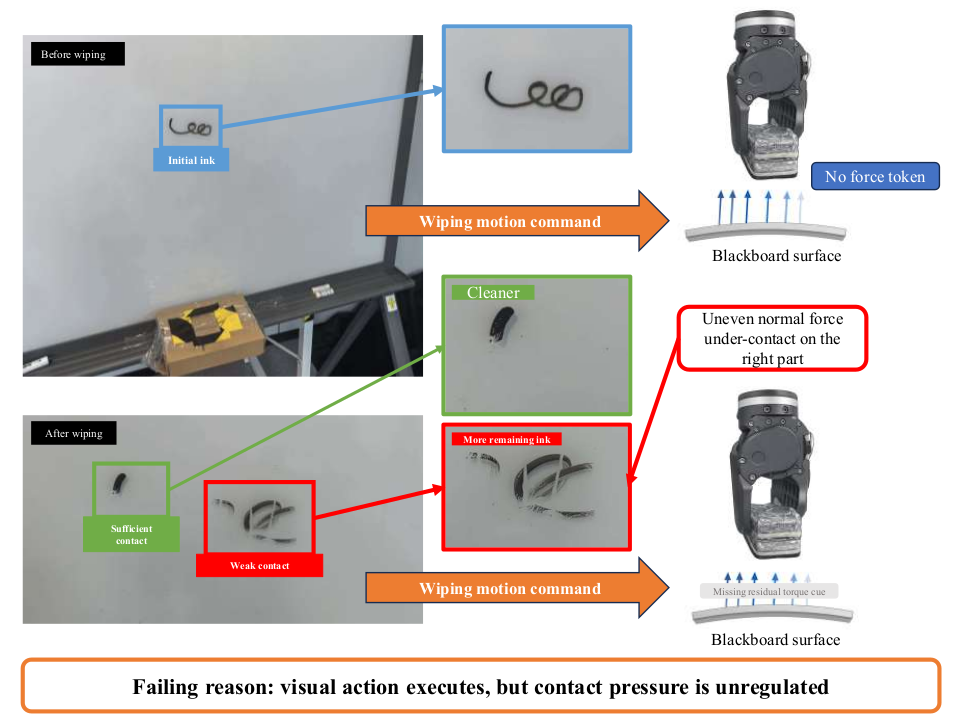

Interaction estimation
HSR-Force
A 200-Hz sensorless estimator predicts free-motion torque, preserves directional residual joint torque, and summarizes contact intensity and temporal trends.
Project page
A force-aware VLA framework that connects sensorless contact estimation with whole-body compensation for wheel-legged robots.

Contact-rich loco-manipulation requires a bridge that connects semantic action generation and physical interaction regulation. Existing VLA models generate task-level actions from visual and linguistic observations, but lack interpretation of how generated actions interact with the physical world. While the whole-body control policy can stabilize the robot, it is unable to distinguish between forces originating from task-relevant contacts and those caused by external disturbances during manipulation.
We propose FWBC-VLA, a force-aware loco-manipulation VLA framework for wheel-legged robots that bridges task-level action generation and compensation for WBC. HSR-Force estimates contact intensity and temporal contact trends without dedicated force/torque sensors. These estimates are encoded as force tokens for action decoding and are also used by a compensation generator to produce corrective whole-body actions. Real-world experiments on whiteboard wiping and door opening with a door closer demonstrate the effectiveness of FWBC-VLA in contact-rich loco-manipulation.
Contact Perception Is Missing State in Whole-Body Control

In contact-rich loco-manipulation, contact is not an auxiliary sensing modality. It is a latent physical state that determines both whether the task is progressing and whether the robot can remain stable while executing it. The same end-effector load that enables wiping or overcomes a door closer also propagates through the arm and perturbs the mobile body.
Yet existing whole-body VLA stacks communicate mainly through kinematic commands. The VLA can prescribe where to move without knowing how contact is evolving, while the WBC can reject disturbances without knowing which forces are task-relevant. A robot may therefore follow the intended trajectory and still fail physically by losing contact, applying the wrong load, or drifting at the base.
The central challenge is not simply to add force as another policy input, but to recover a causal interaction state and make it actionable across the control hierarchy. FWBC-VLA estimates this state without dedicated F/T sensors and uses it to close two coupled feedback loops: one adapts task-level action generation, while the other compensates the body-level consequences of the same contact.
The method has three tightly connected parts. HSR-Force estimates residual interaction from robot proprioception at high rate, the VLA action expert receives short force-token histories, and a compensation generator converts body-frame load cues into bounded base corrections. The downstream WBC still handles balance and low-level tracking.
Interaction estimation
A 200-Hz sensorless estimator predicts free-motion torque, preserves directional residual joint torque, and summarizes contact intensity and temporal trends.
Action generation
Short histories of interaction estimates are encoded as force tokens and late-fused into the action expert during loco-manipulation action decoding.
Whole-body control
Projected load proxies and base proprioception feed a compensation sidecar that generates bounded corrective actions for sustained physical contact.
WL&Arm captures contact-rich wheel-legged loco-manipulation through Pico-based force-intent teleoperation. It pairs high-rate proprioceptive recordings for contact estimation with low-rate real-robot demonstrations for VLA action learning. The dataset covers bottle pick-and-place, whiteboard wiping, and door opening, with force-intent annotations kept as metadata rather than deployed policy inputs.

teleoperation episodes
joint data for contact estimation
loco-manipulation demonstrations
Pico-based tangential and normal command metadata
Experiments evaluate sensorless force estimation, real-world loco-manipulation, and the contribution of force-conditioned compensation. HSR-Force responds near contact onset and remains active during sustained door loading. In whiteboard wiping and door opening, FWBC-VLA improves final-stage success most strongly during contact-intensive execution.



@misc{zhang2026fwbcvla,
title = {FWBC-VLA: Force-Aware Whole-Body Compensation for Contact-Rich Loco-Manipulation},
author = {Zhang, Yutian and Ma, Siyuan and Yang, Liwen and Li, Yang and Hao, Ce and Chi, Haozhen and Wei, Dong and Yu, Qiaojun and Hou, Dibo},
year = {2026},
note = {Project page. Publication metadata to be updated.}
}